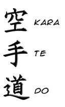

Karatedo
About Karate-do
Karate (空手) is a martial art developed in the Ryukyu Kingdom. It developed from the indigenous Ryukyuan martial arts (called te (手), "hand"; tii in Okinawan) under the influence of Chinese martial arts, particularly Fujian White Crane. Karate is now predominantly a striking art using punching, kicking, knee strikes, elbow strikes and open-hand techniques such as knife-hands, spear-hands and palm-heel strikes. Historically, and in some modern styles, grappling, throws, joint locks, restraints and vital-point strikes are also taught. A karate practitioner is called a karateka (空手家).
Purpose
The purpose of Traditional Karate is to develop well-balanced mind and body, through training in fighting techniques. Traditional Karate also shares the ultimate aim with Budo, which is to cultivate great human character of a higher class that prevents any violent attack before an actual fight occurs.